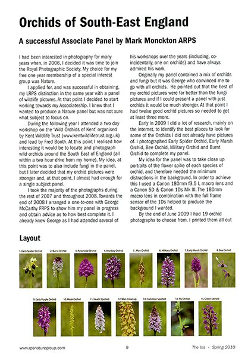
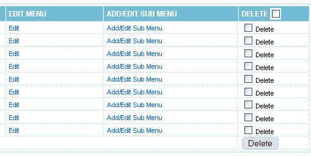

***
Dalam membangun sebuah halaman web yang utuh dan berfungsi dengan baik, pada dasarnya, ada tiga unsur yang tidak dapat dipisahkan satu sama lain. Ketiga unsur ini adalah HTML, CSS, dan Javascript. Ketiganya saling berhubungan dan melengkapi antara satu sama lain.
HTML (alias Hyper Text Markup Language) pada dasarnya bukan merupakan bahasa pemograman. Begitu juga dengan CSS (alias Cascading Style Sheet). Bila dibandingkan dengan JavaScript, baik HTML dan CSS sebetulnya hanya digunakan sebagai media untuk “menampilkan” informasi, dan bukan “mengolah” informasi seperti bahasa pemograman kebanyakan.
Secara ringkas, fungsi ketiganya dapat dijelaskan sebagai berikut:
Artikel ini bertujuan untuk menjelaskan pengertian dari ketiganya, memberikan penjelasan singkat bagaimana mereka bekerja, dan bagaimana ketiganya bersinergi untuk menghasilkan sebuah halaman web.
***
HTML adalah inti dari semua halaman web. Tidak pedulli secanggih atau sebanyak apa teknologi website yang digunakan, HTML tetap merupakan kerangka utamanya. HTML adalah titik awal pembuatan sebuah halaman web.
HTML bertugas untuk menghadirkan informasi yang hendak ditampilkan, dan kemudian menggolongkan informasi tersebut ke dalam beberapa tipe sehingga dapat kita kendalikan dengan CSS juga JavaScript. Dari gambar di atas sebagai contoh, misalnya. Informasi yang dihadirkan adalah tulisan dan gambar. Tulisan-tulisan dan gambar tersebut dibagi-bagi ke dalam beberapa tipe: yang paling besar di atas adalah header, di bawahnya adalah subheader, dan isi tulisan adalah badan/body dari tulisan.
HMTL membagi data-data tersebut ke dalam golongan-golongan yang disebut sebagai “elemen” atau “tag”. Tag ini menandai jenis dan kategori dari setiap informasi yang hendak dihadirkan.
Semua halaman web, tanpa terkecuali, tersusun atas sekumpulan elemen/tag HTML yang menandai konten atau isi dari informasi yang mereka sajikan. Contohnya, tulisan di halaman web ini:
Ini adalah paragraf.
Walau pun tampak biasa, di dalam kode HTML, tulisan tersebut sebetulnya dijelaskan sebagai:
<p><b> Ini adalah paragraf. </b></p>
<p> pada tulisan di atas digunakan untuk menandai suatu paragraf, dan <b> digunakan untuk menandai tulisan di dalam paragraf tersebut yang diberikan efek bold.
Tag di dalam HTML umumnya diawali dengan golongan informasi tersebut yang dikurung dengan <...>, dan kemudian ditutup dengan </...>. Dengan HTML, kita bisa menandai header, paragraf, page break, daftar, format tulisan, gambar, link, dan bahkan membuat tabel beserta data-data di dalamnya.
CSS atau Cascading Style Sheet menjelaskan bagaimana elemen-elemen HTML terlihat di sebuah halaman web. Jika HTML diibaratkan sebagai dinding, maka CSS adalah catnya. CSS membantu informasi dari HTML untuk terlihat sebagaimana yang pembuatnya kehendaki.
CSS membuat kita bisa mengatur susunan layout, font, gambar latar belakang, dan warna-warni pada setiap elemen yang sudah kita tandai di HTML.
Sebuah halaman web yang dibuat hanya dengan menggunakan HTML saja akan tampak seperti berikut:
Setelah menggunakan CSS untuk mengatur layout serta warna elemen, halaman web di atas dapat diubah menjadi lebih sedap dipandang seperti pada gambar di bawah ini:
Singkatnya, CSS adalah serangkaian aturan yang mengendalikan setiap elemen-elemen di dalam HTML yang sudah ditandai dengan tag. CSS dapat mengendalikan satu tag tertentu, beberapa tag sekaligus, dan bahkan halaman web secara keseluruhan hanya dengan beberapa baris aturan saja.
CSS dapat dibuat di dalam file HTML. Ada dua metode yang biasanya digunakan untuk membuat CSS di dalam flle HTML: pertama, membuatnya langsung di dalam tag elemen, dan kedua, membuatnya secara keseluruhan di dalam elemen head sebelum elemen body.
Namun umumnya, file CSS dibuat terpisah dari file HTML, dengan keterangan di dalam file HTML bahwa halaman web yang dibuat dari file HTML tersebut menggunakan file CSS tertentu sebagai metode penampilan informasi yang terdapat di dalamnya.
JavaScript berbeda lagi dengan HTML dan CSS. JavaScript adalah bahasa pemograman yang “sesungguhnya”, seperti halnya bahasa pemograman lain seperti C++ atau Phyton. JavaScript tidak seperti HTML dan CSS yang bertugas menampilkan atau mengatur data, melainkan juga dapat digunakan untuk mengolah data-data tersebut.
Pertama kali diluncurkan pada tahun 1995, JavaScript bisa dibilang merupakan bahasa wajib dalam pemograman web. JavaScript, bersama HTML dan CSS, merupakan bahasa yang membentuk halaman web yang dapat dibaca oleh semua dan segala jenis browser web.
JavaScript adalah bahasa pemograman berbasis logika yang dapat digunakan untuk memodifikasi konten di dalam sebuah halaman web, dan membuatnya mampu merespon segala jenis perubahan informasi atau data yang dilakukan oleh pengguna/end-user.
Salah satu contoh penggunaan JavaScript yang paling umum adalah untuk membuat checkbox, form pendaftaran yang dapat berinteraksi dengan database, dan mengatur proses login menggunakan password. Intinya, JavaScript adalah bahasa pemograman yang mengizinkan pembuatnya untuk membuat halaman web yang interaktif dan dinamis.
Misalnya, dalam pembuatan checkbox atau form, di dalam kodenya biasanya terdapat sejenis if... statement yang memberikan respon berbeda tergantung apakah kita mencentang checkbox tersebut atau tidak, atau apakah kita mengisi form tersebut dengan benar atau belum.

Di gambar di atas misal, menggunakan JavaScript, kita bisa menyimpan aksi pengguna yang menentukan isi dari dara tersebut, dan kemudian menampilkannya sesuai input yang mereka masukkan setelah halaman web tersebut di-refresh.
***
Kesimpulannya: HTML, CSS, dan JavaScript bekerja dengan saling melengkapi satu sama lain. HTML bertugas membangun struktur dan menyusun informasi apa saja yang hendak disajikan, CSS mengatur bagaimana informasi tersebut disajikan, dan JavaScript mengendalikan bagaimana informasi tersebut bereaksi terhadap input dari pengguna.
HTML dan CSS dapat kalian gunakan untuk membangun halaman web statis yang bertugas menampilkan informasi atau data saja dalam bentuk penyajian tertentu. Namun bila kalian ingin membuat halaman web yang dinamis, yang bisa memberikan reaksi tertentu terhadap input pengguna, maka JavaScript wajib diperlukan.
Ketiganya sama-sama membentuk sebuah halaman web yang utuh, dan tidak dapat dipisahkan antara satu sama lainnya.